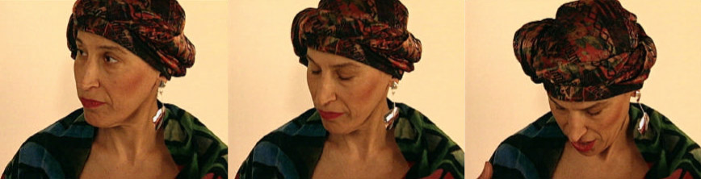

| < Bye Bye Cancer | Turban > |
From: Libby_Levinson@idg.com
X-Lotus-FromDomain: IDG
Date: Tues,25 Sep 2001 14:17:14
Subject: Carol
Dearest Elsa,
Have you heard about Carol. Her cancer has
metastasized to her lungs and her brain. She has difficulty breathing
and uses oxygen. The docs are changing the chemo in the hopes they
can arrest it, but it will take several weeks before they know if the
new chemo is working or not. It's so scarey.
From: DorseyTV@aol.com
Date: Tues.2 Oct 2001 23:32:13 EDT
To:elsad@comcast.net
X-Mailer:AOL 6.0 for Windows
US sub 10536
Subject: Carol
Terry's sister was in the 2nd building of the WTC in NYC on September 11th and didn't make it out. Carol is not doing very well. She has cancer all over her chest wall, in her lungs and in her brain. She's on oxygen. They're trying lots of different chemo. She's exhausted. Not good, not good at all. Let's talk soon -Debbie
From: DorseyTV@aol.com
Date: Sun. 7Oct 2001 16:59:20 EDT
to: elsad@comcast.net
X-Mailer:AOL 6.0 for Windows
US sub 10536
Subject: Carol
Hi Elsa. Carol is doing very badly. I haven't talked to her, but did speak with her niece last night. Hospice is coming in sometime later this week. So, that's all I know right now. I'll let you know as I learn more- Take good care -Debbie D.
From: Libby_Levinson@idg.com
X-Lotus-FromDomain:IDG
To:elsad@comcast.net
Date: Tue, 9 Oct 2001 13:35:42 -0400
Subject: Carol
Dearest Elsa, I wanted to update you on Carol. She was in Italy for the month of July with friends, and while she was there, the cancer began to spread. When she returned in August and saw her oncologist, the cancer had spread to her lungs and her brain. Chemotherapy has not done anything, and her body is full of the disease. She made the decision not to have any further treatments. She's at her home at the cape and her friends are with her round the clock. Don't know if she'll still be around by the 19th. I thought you'd want to know what was happening. Cancer sucks! Feeling very sad, angry, guilty, and scared all at the same time. Love. Libby.
From: Libby_Levinson@idg.com
X-Lotus-FromDomain: IDG
Date: Wed, 28Nov 2001 11:40:59-0500
To: Elsa Dorfman <elsad@comcast.net>
Subject: Carol
Dearest Elsa, I'll be sure to let you know when the service is. I hate cancer. Libby
From: DorseyTV@aol.com
Date: Mon, 18 Feb 2002 21:21:42 EST
Subject: Carol
To: elsad@comcast.net
X-Mailer: AOL for Macintosh OS X
US sub 20
I got your e-mail about including Carol's dying in your book. I've thought a lot about it. I understand that you want to make the point that this is real life, that people die and it seems that a lot people we know have died lately. After Carol died my immediate reaction was to dedicate NoHairDay to Carol. Bob was the one who got me thinking. He said NoHairDay is about life not death. I started thinking that he was right. Here we were, three bald women having poisons pumped into our body so that we wouldn't die of cancer romping around in your studio making art and celebrating that we were alive. I feel that readers will think what's the point? One of them died and the others will probably die too. You have to keep the book full of life. The photographs you took give hope to a lot of women who have breast cancer. To read your book and to learn that Carol died will only make them feel that breast cancer is a death sentence. And sometimes it is but sometimes it's not. And we need to give those women going through diagnosis and treatment the hope that they have a good shot of making it. NoHairDay is about faith, hope friendship and courage. There should be no obituaries.
From: Libby_Levinson@idg.com
X-Lotus-FromDomain: IDG
Date: Wed, 20 Feb 2002 08:09:17 -0500
To: Elsa Dorfman <elsad@world.std.com>
Cc: Bob Burns <bobburns@tiac.com>,
dorseytv@aol.com
Subject: Re: Carol
It's not the way we hoped it would turn out; but we were each told the same thing by our docs: there's no cure for breast cancer; there are no guarantees that the disease will not return; it can return in 1 year, or in 5 years on in 10 years or in 18 years; or it may never return. It's a crap shoot. Debbie and I have learned that we can't live our lives waiting for the cancer to return. If we do, then we are the losers and the cancer has won. So, we live hoping that we will be lucky and that the cancer won't return. Carol shared that hope and it was especially evident when we were in your studio being photographed. Without hope the cancer wins.
From: Elsa Dorfman <elsad@comcast.net>
Date: Tue, 19 Feb 2002 10:29:18 -0500
To: debbie dorsey, libby levinson, bob burns
Subject: Carol
I get it luvs. But I think we have to add that Carol has died. Photography is all abt death and I think abt death all the time. Nothing stays the same as it was the moment it was photographed. Photography taunts death, but of course the photograph decays and so death wins. It was my dark soul that propelled me to make you all so full of life. And the picture-making was my homage to the people who had come to my studio in the same spirit you did and who had died too soon. All the details of my photo sessions with them were with me. I couldn't tell the three of you that I was worried for you.
I can see skipping our heartbreaking news. But is nohairday only uplifting or encouraging and funny? Nohairday is abt real life. And Carol was the real thing. And the real thing happened to her. Everyone who sees nohairday or reads our book can take it. One thing I wish is that Carol's docs cd have said, hey yr cancer is so virulent, forget treatments, enjoy life. Then Carol wdn't have had to put up w/so much shit for as long as she did. WHY DON' T THOSE DOCS KNOW MORE?

| < Bye Bye Cancer | Turban > |
Find Elsa's Books


Please change your links and bookmarks to elsadorfman.com!
Elsa thanks her cybergodmother, photo.net, her longtime, most generous host at furfly.com, and her current web host Mike Sisk at TCP/IP Ranch, LLC.
Copyright 1970-2010 © Elsa Dorfman.
Inquiries for the use of Elsa's content are welcomed!
Please
read these guidelines.
Contact
Elsa Dorfman via email or send Website Feedback to her webmaster.